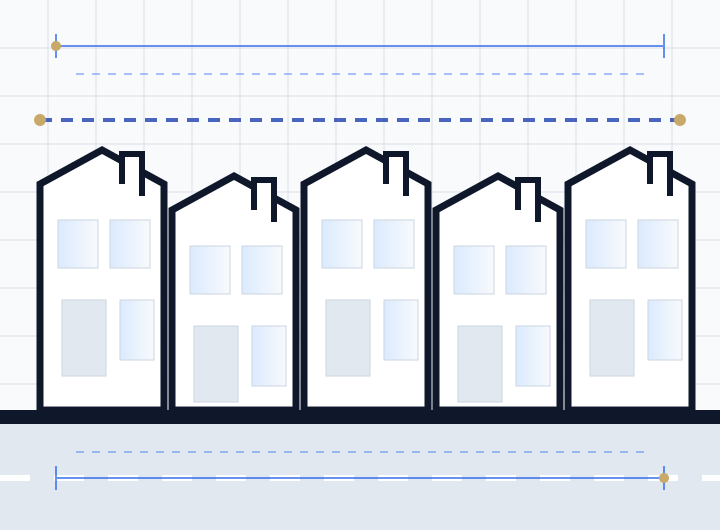

Southampton City Council
The council's local plan and residential design guide set standards for extension scale, amenity space and parking provision.
Extensions, conversions and HMO schemes across Southampton — a coastal city with an early and wide-reaching approach to controlling HMO concentration.

Southampton was one of the earlier English cities to use Article 4 directions extensively to manage the growth of shared housing, and the effect on the local investment market has been significant. Anyone considering an HMO conversion here needs the planning position established before anything else happens.
Beyond that, the city's housing stock is largely interwar and post-war suburban semis with pockets of Victorian terracing closer to the centre, and it carries the additional considerations that come with a coastal and estuarine location: flood risk in low-lying areas and exposure in the design of external fabric.
HMO conversions are heavily regulated here. Article 4 directions covering a wide area of the city remove the permitted development right to convert family houses to small HMOs, and applications are assessed against concentration thresholds in the surrounding area. This is the first thing to check.
Suburban extensions to interwar semis in Bassett, Bitterne and Shirley are the core homeowner work, with reasonable plot sizes supporting side and rear extensions.
Flood risk. Parts of Southampton sit in Environment Agency flood zones, particularly nearer the Itchen and Test and the waterfront. Development in those areas may need a flood risk assessment and design measures such as raised floor levels, which affect the drawings materially.
Loft conversions across the terraced and semi-detached stock, with hip-to-gable common on the interwar housing.
The constraints we check before starting design work on any project in Hampshire.
The council's local plan and residential design guide set standards for extension scale, amenity space and parking provision.
Southampton applies Article 4 directions across a wide area removing C3 to C4 permitted development rights. We confirm the current coverage for your address.
Applications are commonly assessed against the proportion of existing HMOs nearby, which can be decisive on the outcome.
Parts of the city fall within Environment Agency flood zones, potentially requiring a flood risk assessment and raised floor levels.
Exposed locations affect external fabric specification, driving rain resistance and window detailing.
Eastleigh, Test Valley, New Forest, Fareham and Winchester apply their own separate policies.
We deliver projects across Southampton and Hampshire remotely, working from measured information, existing drawings and photographic surveys. Where a full measured survey is required we will tell you at the outset and agree it before starting.
Check your postcode →Local answers for property owners and developers in Southampton.
Almost certainly. Southampton applies Article 4 directions across a wide area of the city removing the permitted development right to convert a family home into a small HMO, so a full planning application is normally required. Applications are also assessed against the concentration of existing HMOs nearby. We confirm the position for your address before any design work.
Parts of the city, particularly nearer the waterfront and the Itchen and Test, fall within Environment Agency flood zones. Where they do, a flood risk assessment may be required and the design may need raised floor levels or flood-resilient construction. It is one of the first checks we make on a Southampton site.
Interwar semis in areas like Bassett and Bitterne often have reasonable side and rear space. Single-storey rear extensions are frequently permitted development within the standard allowances; two-storey side extensions require planning permission and the council will expect an appropriate boundary gap and set-back from the front elevation.
It can. Exposed and near-coastal locations affect the specification of external walls, render, driving rain resistance and window detailing, and building control will expect the specification to reflect the exposure category. We reflect that in the building regulations package.
Yes. We prepare drawings for projects across Eastleigh, Test Valley, New Forest, Fareham, Winchester and Portsmouth in addition to Southampton City Council.
Share your address, project type, existing drawings and preferred timing. We will review the information and explain the most suitable next step.
We work remotely with clients nationwide. Pick your area for local planning guidance.